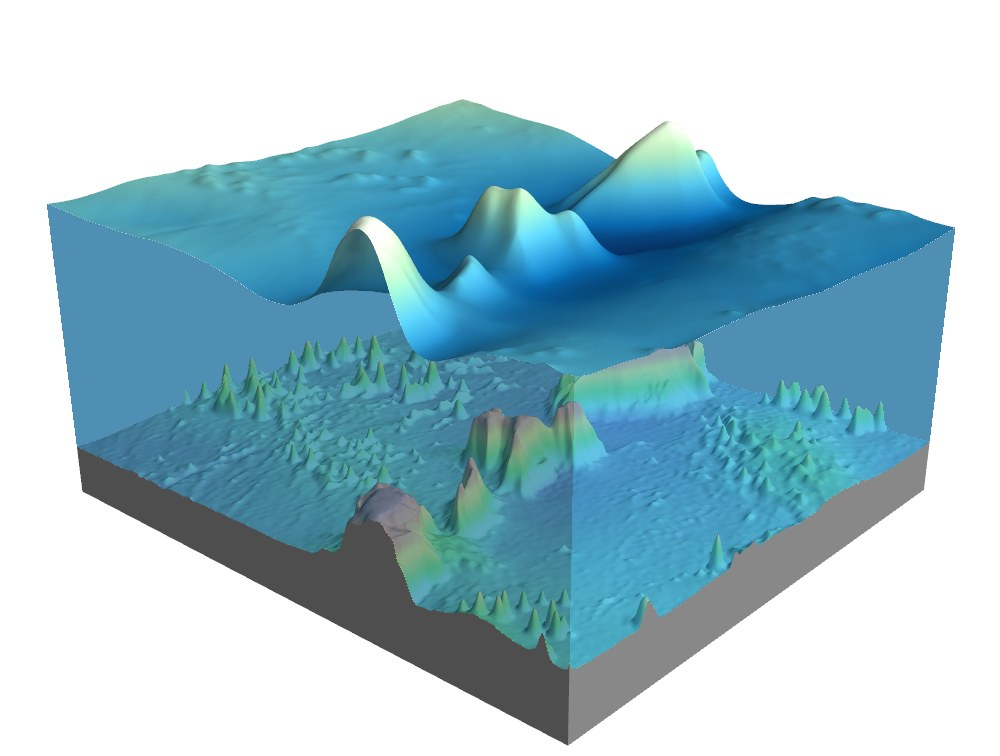

A hobby and a passion of mine has always been to create visualisations of scientific data to better communicate concepts and results. Working towards a PhD and obtaining results of my own during my career has enabled this even more, as I have my own data to work with. Here are some of the examples of work i have been doing!
Bjarke Nilsson
PhD Student
Contact
